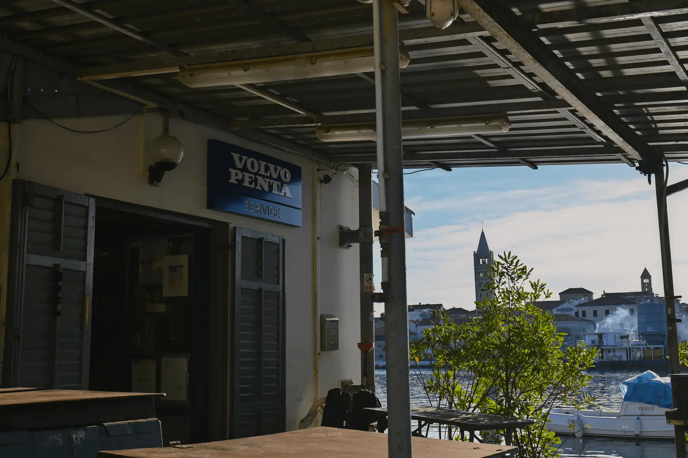
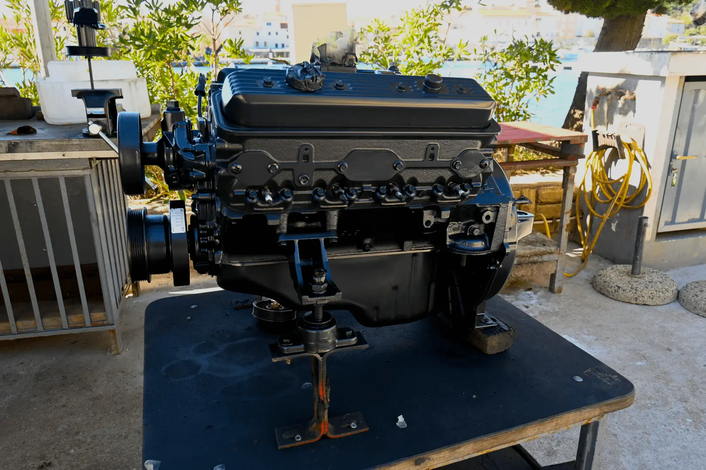

SERVIS MORAS
BRODOMEHANIČARSKI SERVIS




Official service for


O nama
Brodomehaničarski servis Moras reputabilni je servis koji posluje preko 20 godina. Službeni smo servis za sve volvo penta, mercruiser, mercury i tohatshu brodske motore.
Nalazimo se u glavnoj luci na otoku Rabu te radimo aktivne kvarove u samoj luci ili rad na terenu koji je moguć u svakoj suhoj marini na otoku.
Glavni cilj ovog servisa je olakšati vaše morsko iskustvo.
Kontakt
- E-mail: service.moras@gmail.com
- Mobile: +385 98 343 284
- service number: 000 999 234
Lokacija
Adresa
- Banjol 108
- 51280 Rab